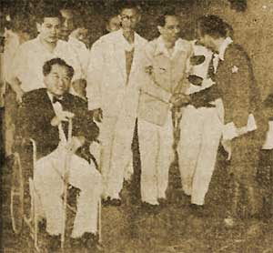
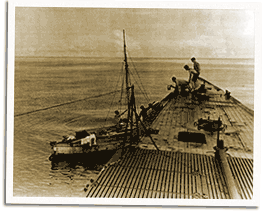

|
j
a v a s c r i p t |
July 11, 1943
Tribune: "Premier, PCPI Members Confer ... Tojo lauds work of body." What work? Tojo made a little senseless speech and Laurel responded with the usual over-ebullient welcome. Three pictures are all comical; the best one shows Laurel and Roxas entering the Manila Hotel — Laurel on his wheelchair, Roxas leaning on his cane and supported by a companion. It looks like they're about to check into a hospital instead of hold a joyous independence conference. The description of the event enables us to check the chronology:

Laurel and Roxas Entering
the Manila Hotel The conference started at 1600, lasted 45 minutes, then they proceeded to the Manila Hotel's Winter Garden for a tea party. Along the way, Roxas had a private word with Tojo and excused himself from the rest of the proceedings. Say 5 minutes en route and 5 minutes to settle down at the table makes it a 15-minute tea party. You can just imagine how happy everyone was. Page 1: "100,000 Greet Tojo." Really? Splashes: "What's the use of having 400,000 people shouting Banzai and Mabuhay if we can't attend to a handful of guerrilleros?" . . . . Stories doing the rounds: A friend's "A-1 source" has actually seen a guerilla blacklist with 56 names, including Strebel (25th on the list) and Roces Jr. The source was reluctant to talk so he didn't press for details. Vargas wasn't on the list. Another friend told me this morning that guerrillas are recruiting again — he knows of two who've just left to join up.

Submarine and Filipino Fishermen
A traveling salesman says that in a Cagayan town everyone knows a few fishermen who have seen American subs discharging supplies. A lumber king here said the captain of a certain inter-island ship has just retired. He'd seen too many American submarines, and though they usually left him alone, he decided not to tempt fate any longer. A fellow saw an apple so perfect that he thought it was a fake ... until he smelled it. Another is renting a recent Life magazine for P20 a reading. ...ooOoo... |
|
|
|
|